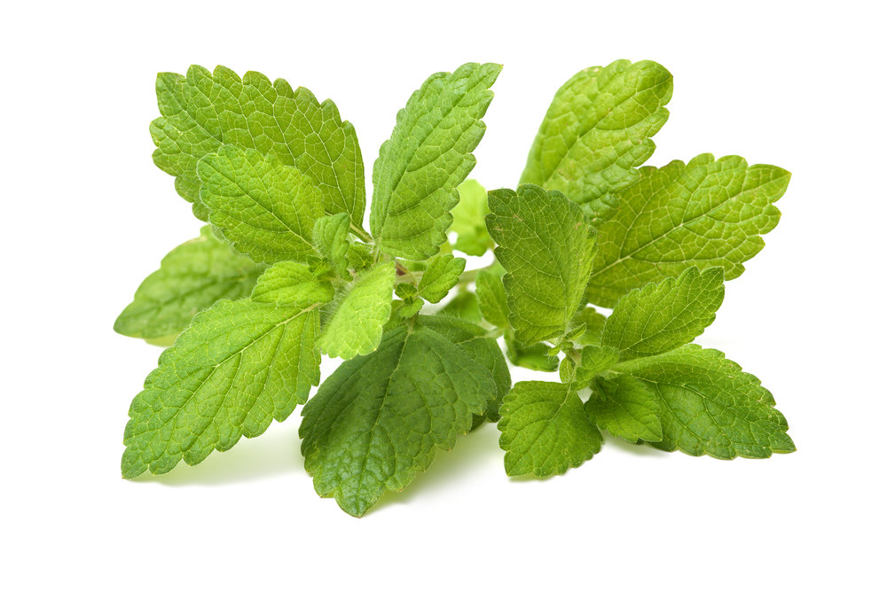

CIDREIRA
Nome popular: erva-cidreira, cidreira, melissa, chá-da-frança, coroa-de-rei, capim-cheiroso, capim-cidreira, limonete
melissa-romana, salva-do-brasil.
Nome científico: Melissa officinalis.
Família: Lamiaceae.
Descrição: A erva-cidreira é uma planta herbácea e perene, de reconhecido valor como aromática e medicinal.
Ela pertence à mesma família da hortelã e do manjericão e apresenta um típico perfume de limão nas folhas.
Ela é bastante confundida com a erva-cidreira-de-folha (Lippia alba) e com o capim-cidró (Cymbopogon citratus),
devido ao aroma semelhante e nomes populares em comum. Suas folhas são opostas, ovadas a rombóides, de margens crenadas e de cor verde clara.
Os ramos são quadrangulares, ramificados e podem ser verdes ou avermelhados, mais eretos ou mais prostrados, de acordo com a cultivar.
Ocorre ainda uma cultivar de folhas amarelas, a “All Gold” e uma variegada de amarelo, a “Variegata”. Floresce na primavera e verão,
despontando flores pequenas, delicadas, de cor amarelo clara a lilás. Os frutos que se seguem são do tipo aquênio, oblongos e pardacentos.
A floração da erva-cidreira é muito atrativa para abelhas e borboletas. .
Regiões de cultivo: Originária do Texas (EUA), também é cultivada no Caribe, México, América Central e América do Sul .
Forma de cultivo: Espaçamento de 50 x 70 cm entre plantas. Adapta bem a vários tipos de solos, com preferência por aqueles com boa drenagem,
podendo ser plantada como bordadura de hortas. Recomenda-se uma adubação com esterco de gado bem curtido, de aves ou composto orgânico,
quando necessário. .
Utilidade na medicina: Folhas ou ramos são usadas como sedativo, em dores de cabeça e de dente, em estados gripais
(como diaforético e tônico), em palpitações, em distúrbios gastrointestinais e menstruais, bem como em reumatismo.
Contraindicações: Gestantes, lactantes e pessoas com hipotireoidismo e hipotensão não devem fazer o consumo.
Além disso, quem faz uso de calmantes e sedativos deve consultar o médico antes de tomar o chá.
Forma de aplicação: Deve adicionar as folhas de cidreira na água fervida, desligue o fogo e deixe por 20 minutos, após passado o tempo
adicione as folhas secas da planta e deixe tampado por 20 minutos, coe e beba 3 vezes ao dia.
https://www.jardineiro.net/plantas/erva-cidreira-melissa-officinalis.html